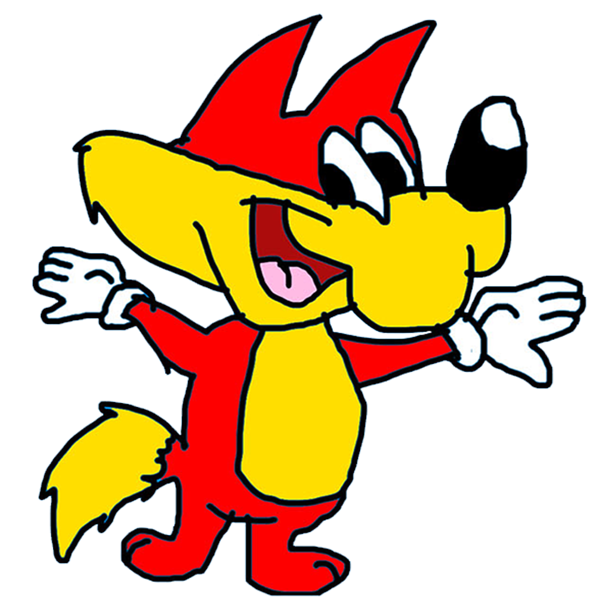

Sobre a Segunda Temporada
Informações:
Quantidade de Episódios: 20
Duração de Produção: Tempo Independente
Está chegando a 2a Temporada do Jonas e sua Turma, com muitos episódios e diversão garantida, apresentando Jonas, A Raposa mais esperta, Pátulo, O Pato Azul Adolescente, Guarda, O Cachorro Atrapalhado da turma e Sussie, A Garota Hipopótamo Carinhosa
Assista a Abertura da 2a Temporada